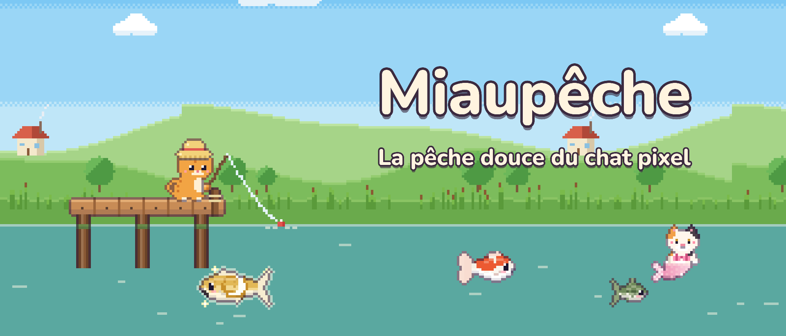
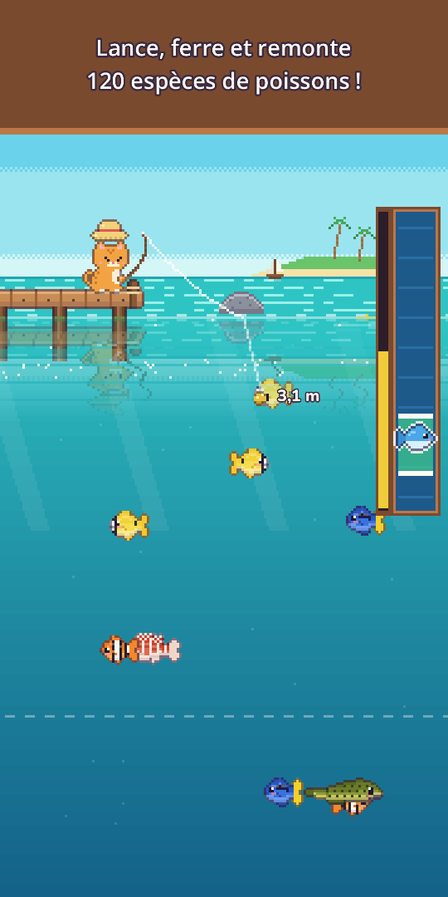
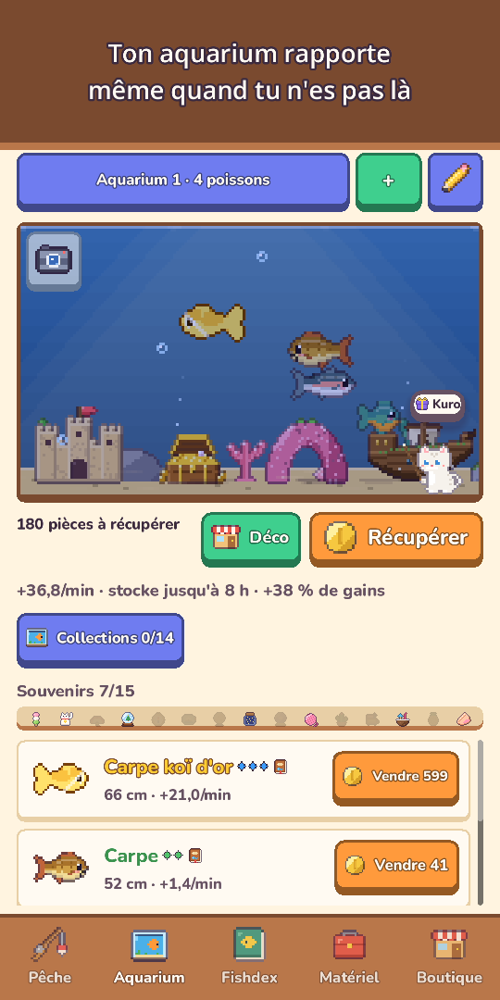
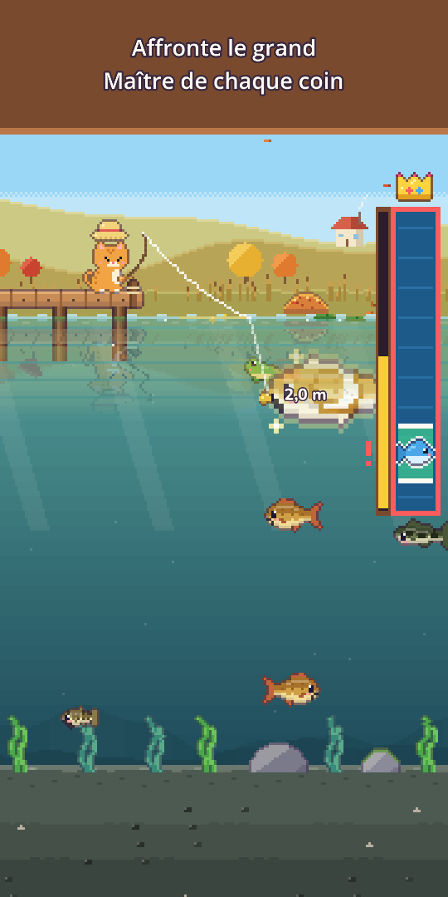
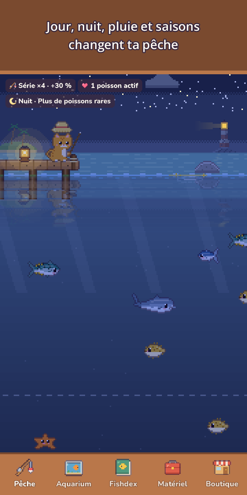
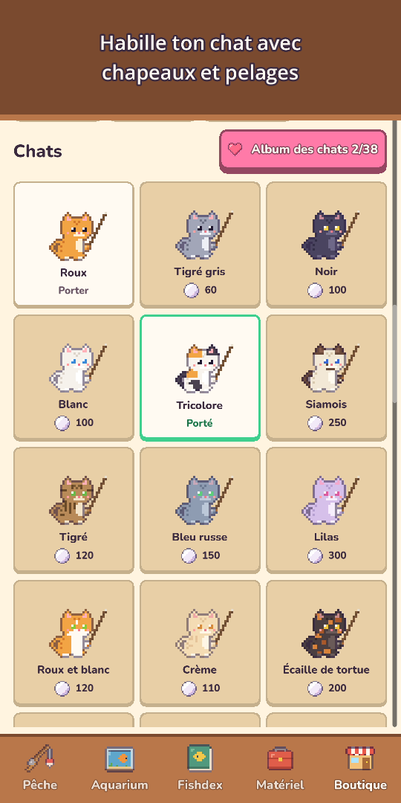
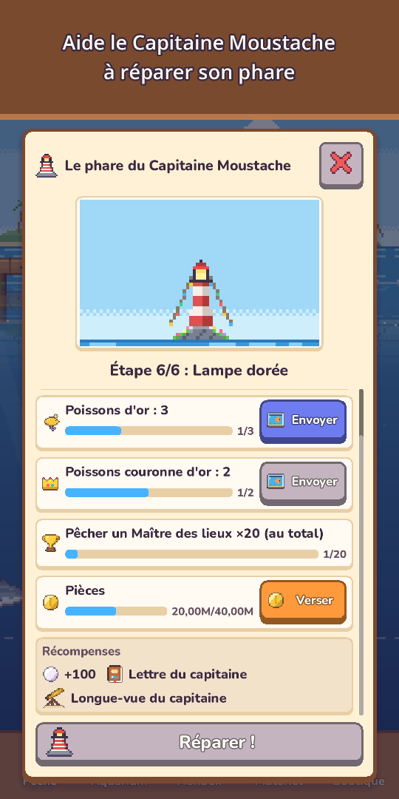
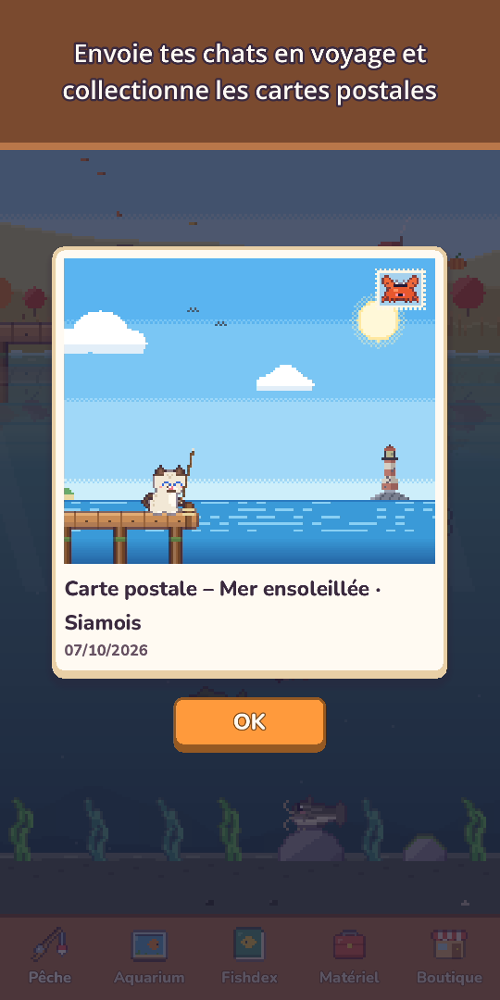

Miaupêche : Pêche chat
La pêche douce du chat pixel
Prends ta canne et ta combi ! Pêche 120 espèces, plonge pour photographier la vie marine et rencontre de rares chats sirènes.







À vos cannes, petit chat ! L'eau regorge de surprises.
Miaupêche est un jeu de pêche douillet en pixel art, jouable d'un seul pouce. Lancez votre ligne, guidez l'appât vers les poissons que vous voyez nager, puis remontez-les grâce à une jauge de prise très satisfaisante.
- Pêche à un pouce maintenez pour lancer, glissez pour guider l'appât, maintenez pour ferrer. Touchez quand le bouchon plonge pour prendre de l'avance (facultatif), avec ronds dans l'eau, éclaboussures, vibrations et pièces qui filent dans votre bourse
- 120 espèces dans 10 coins de pêche Étang des prés, Rivière des monts, Mer ensoleillée, Récif corallien, Lac gelé, Les Abysses, le Temple englouti, le Lac des Nuages, l'Île du Volcan et la Mangrove
- Traquez les poissons dorés, les bancs de poissons rares et des légendes comme la Carpe de lune ou la Baleine étoilée, et affrontez chaque jour le grand Maître de chaque coin
- Plongée enfile ta combi, photographie les créatures qu'on ne pêche pas pour ton Album photo et trouve des grottes cachées à la lampe
- Chats sirènes chaque coin abrite un chat sirène, plus rare qu'une légende. Accueille-le dans ton aquarium ou relâche-le pour une bénédiction porte-bonheur
- 25 leurres sur 5 niveaux un meilleur leurre attire des poissons plus rares, des leurres spéciaux appellent sirènes et légendes, et un gros poisson peut casser ta ligne !
- Un ciel vivant le jour et la nuit suivent votre horloge, pluie, neige et arcs-en-ciel changent la pêche, les étoiles filantes donnent des perles, et les saisons et la vraie lune changent le paysage. Chaque coin affiche la météo des 6 prochaines heures, et des remous dorés signalent les gros poissons
- Fishdex beaucoup de poissons ont leur moment préféré (nuit, pluie, aube ou saison), vos plus belles prises gagnent des Couronnes d'or, et chaque première prise garde son ciel : heure, météo, saison et coin
- Aquarium vos poissons rapportent des pièces même en votre absence. Décorez-le (Épave, Arche de corail…), complétez des collections pour gagner plus, partagez vos Agencements par un code court, et touchez un poisson pour voir où il a été pêché et depuis combien de jours il est là
- Vie de chat et collection du Chapeau grenouille à la Couronne, pelages, chapeaux de saison et un douillet Coin du chat. Envoyez un chat de la famille en Voyage du chat de 3 heures pour des cartes postales en pixel art, et lisez son Journal félin à votre retour
- Voisins et fêtes les chats voisins visitent votre aquarium et laissent des souvenirs, et l'Amitié apporte nouvelles répliques, petits cadeaux et un chapeau d'amitié. Tournoi de la semaine, Pêche entre voisins chaque mois, Poisson invité de la semaine et 5 fêtes par an (Cerisiers, Été, Halloween, Noël, Nouvel An) avec des tampons à échanger contre une déco exclusive à garder pour toujours
- Lisez les lettres en bouteille du Capitaine Moustache, un vieux chat gardien de phare, et aidez-le à le restaurer
- Progressez à votre rythme améliorez Canne, Moulinet, Fil, Appât et Aquarium, fabriquez un appât avec un poisson pêché pour attirer son espèce (sauf les légendaires), plus Missions du jour, Cadeau du jour (un jour manqué ne vous fait rien perdre) et cadeaux au fil des jours
- Petits plaisirs le mode paysage masque les boutons pour simplement contempler le décor, le Journal de pêche garde un Album photo de vos 12 dernières photos d'aquarium et du Coin du chat, et chaque jour un copain caché dans le décor vous offre des perles
- Jouable hors ligne, à tout moment
Gratuit, avec des achats intégrés facultatifs : packs de Perles, Pack Débutant et Pack Soutien (récompenses sans regarder de pub, chapeau Couronne et limite de gains hors ligne doublée). Les 120 espèces s'attrapent sans dépenser un centime.
Aucune pub imposée, aucune bannière. Les pubs sont des récompenses facultatives que vous choisissez de regarder, comme vendre une prise au double.
Détendez-vous, lancez votre ligne et voyez ce qui mord aujourd'hui !